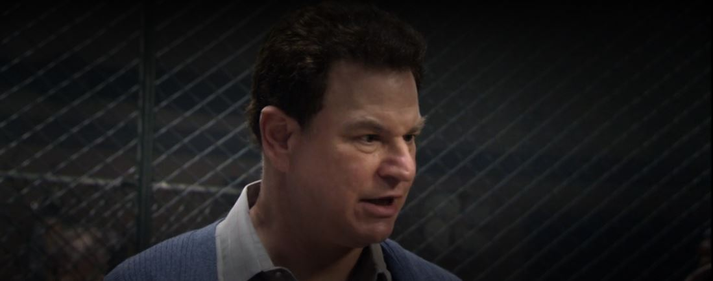

História de Abe Himelfarb
Abe Himelfarb é o dono da loja de penhores mais famosa do bairro de Bed-Stuy. Ele aparece em vários episódios da série quando o Chris vai até seu estabelecimento trocar peças antigas por novas.
Abe teve uma vantagem depois da história do Chris sobre o Assassino da Tesoura, mas na verdade a chance dele era bem pequena, porque todos no bairro pareciam votar no lamar (como foi o resultado das eleições).